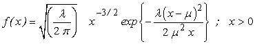

![[invgaussian_ex0]](invgaussian_ex0.bmp) Inverse Gaussian
Inverse Gaussian

model
{
for( i in 1 : N )
{
x[i] ~ dinv.gauss(mu, lambda)
}
# Prior distributions of the model parameters
mu ~ dunif(0.001, 10.0)
lambda~ dunif(0.01, 5.0)
}
The data set given below represent active repair times (in hours) for an airborne communication transceiver, Chhikara and Folks (1977).
Chhikara R.S, Folks J.L.(1977). The inverse Gaussian distribution as a lifetime model. Technometrics, 19 , 461-468.
The MLE's are obtained using 'maxLik' package in R mu = 3.606522 lambda = 1.658853
Data ( click to open )
Inits for chain 1 Inits for chain 2 ( click to open )
Results